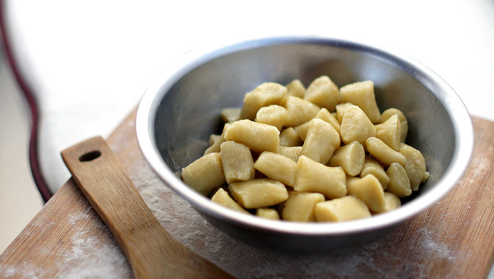

breadfruit gnocchi
4 people — 90 minutes
We are about to leave Tonga, the tropics and the land of bountiful breadfruit. This versatile fruit can be cooked into fries, eaten with coconut milk, made into chips, or like this recipe suggests, it can be made into gnocchi.
Breadfruit has a taste and texture that resembles that of potato, and so it makes sense that it too can be made into gnocchi. The flesh of the fruit can be kneaded with ease, especially if the fruit is very ripe. I have tried to knead it when half-ripe, it works too, but requires added moisture and more kneading - not to mention that it doesn't have as much flavor. Ripe breadfruit develops a sweet taste. It can be difficult to catch it at the right moment, like avocados they have a tendency to overripen overnight. Because we like it so much, we've bought many and have had time to better tell when it can be eaten. The outside becomes soft to the touch, but only just.
We serve these with a light sauce, to better taste the gnocchi. A sauce that we enjoy, is minced garlic and chili peppers cooked in olive oil. The sauce is poured overtop and sprinkled with bits of shredded nori.
 breadfruit1 small
breadfruit1 small olive oil5 ml
olive oil5 ml all purpose flour150 g
all purpose flour150 g
gnocchi
- Wait until your breadfruit is very ripe, soft to the touch. A softer breadfruit will be easier to knead, and will taste sweeter.
- Preheat oven to 200 °C (425 °F). Rub outside of breadfruit with olive oil, and wrap with aluminium foil. Cook for 1 hour.
- Remove foil, peel skin away, cut in half, and remove the seed.
- Let cool, and mash with your hands into a cohesive dough. Add flour, 30 g (1/4 cup) at a time, until the breadfruit flesh stops sticking to your fingers. You may need more, or less, depending on the size of your fruit.
- Sprinkle your work surface with flour, take a golf-sized ball of dough, and roll it into a thin, finger-sized log. Cut the log into bite-sized pieces (around 2cm long) and repeat for the rest of the dough.
- At this point, you can choose to freeze the gnocchi, or to prepare them straight away. To cook them, bring a pot of water to a boil, add the gnocchi, and cook for 5 minutes or so, or until they start to rise to the surface.
- Serve with a light sauce, to better taste the subtle, but sweet flavor of the breadfruit gnocchi.